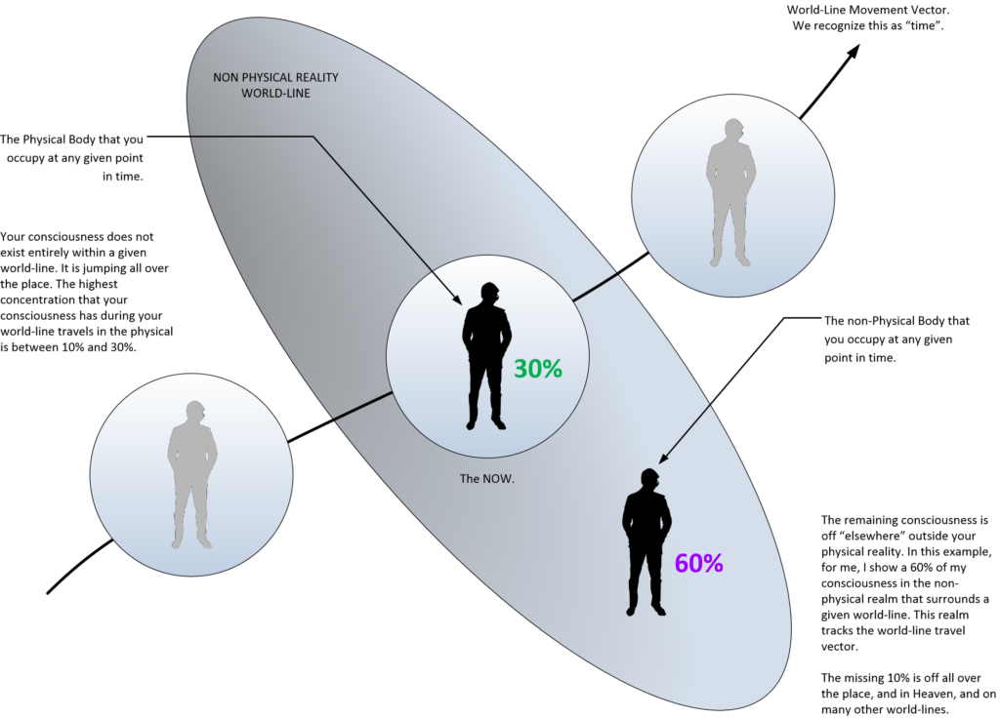

Humans are herd animals. We graze upon the grass in yards fenced in by other sheep. All the time being watched over by the farmer and his barn-dogs.
Now, in this post I am gonna talk about an aspect that I have yet to cover. This is, pretty much, and essentially “the other side of the coin”. Or, to put it in more conventional language, what the other half of me is doing.
Ah. Confused?
Well, of course you are. Or you should be.
In order to explain what is going on, or has happened with me, and what is going to happen to you all, you need to understand what our reality is. you need to understand what our universe is. You need to understand what time is. You need to understand what world-lines are.
And with that being understood, then and only then, I can explain things to you all.
Because it’s really a Hell of a lot of work, and just a casual conversation with a “normal” just isn’t fruitful.
Hey! You're the Jackass that says he was a SEAL and has alien implants in his head and can time travel! Yeah. Yeahhhh right.
It’s like that.
No really.
It’s EXACTLY like that.
It’s a twisting of words, by the intensely ignorant who are not listening, have no desire to listen, and substitute their ideas to replace what I actually say. Then regurgitate it in a disparaging manner so as to ridicule my actions, my experience and my exposures.
But, here… for you handful that are actually reading what I write, who are actually following my lesson plans and learning… I am presenting something that I have not talked about much.
Here we are going to talk about a few things.
They are…
- The division of consciousness in any particular world-line.
- How consciousness splits between the Heavenly realms and the Reality Universe.
- What is going on “behind the scenes” with myself as a “MAJ Operator”.
Quick Note
The post concerns a “medical operation” that I underwent.
When ever one of these “adjustments”, “procedures” or “operations” occur, there are usually larger scale events in the physical world going on afterwards. Whether that is the result of the procedures, or whether the procedures are to mitigate the effects of those events, I do not know.
This post describes an event that took place on 14OCT20 in the early morning.
Introduction
Today in my early morning slumber, I experienced one of my “medical procedures” that I have from time to time. It doesn’t happen in the physical reality.
Nor is it tied to a given place or world-line.
It is not tied to any particular world line.
It occurs outside the world-line travel vector (known as time and space), and for most people it is “just” a dream. That is how we interpret it. It is an event that lies outside our physical reality, and which lies outside our dreams, and which lies outside what we know and understand as “reality”.
Many people mistakenly call these events “abductions”. Where they are forcefully taken against their will to strange places or labs for medical dissection, weird sexual experiments and other horrors.
It’s nothing of that type.
But I can see how someone would get that impression.
What I am going to describe is something that I consider to be “normal”, because I have lived with it for the last four decades. But it will sound strange to “normal people”. I have all sorts of things that are going on regarding me. I mean, not just in my day-to-day life, but outside my life (my 30% of consciousness associated with world-line travel) . It’s the realm of what my other 70% is up to.
Consciousness is divided. The soul divides the consciousness into groups. 10% to 30% is associated with getting experiences on earth. I call this "world-line travel" within our "reality universe". The rest is off doing "other" things.
Usually, because it has no direct bearing on my day-to-day activities, I pretty much ignore it all. Much like everyone else does. And for most people, that is all that there is.
Your day-to-day life and then you die.
Game over.
Well, it’s not that way.
Instead, everyone has a big (huge) part of them off doing “things”.
Much of that is in the “Heavenly realms”, but a lot has to do with nearby (to the “Reality Universe”). Because being a human means that part of your travels the MWI in the physical body, and the rest of you do other things elsewhere. It’s normal. It’s what being a human is.
And me, well…
Well…I signed up for all this.
So I am more active in these other areas (I personally believe) that most of my fellow human brothers and sisters. I am an active participant. I am more involved. I am thus a little bit different.
Like how you might have a stud bull, or a prized milking cow. Or maybe how one of your calves won the State fair.
And, as part of my role…
…It’s many things that I have (already) talked about. All pretty much revolving around sentience sorting…
… and evolution…
…and all that is wrapped up within the program that I entered back in April 1981 in the United States Navy, Office of Naval Intelligence (ONI) for a program that fell under MAJestic operations…
… that I be handed over to a specific extraterrestrial species …
… and that they would do things to me…
… and that it would be for the good of all humanity.
But…
While it was explained to me that I would be in the program for life, and that my role would be an important one, and that I would be exposed to very advanced and top secret technologies and concepts…
…I had no idea that I would still be actively involved and being tweaked well past my retirement years.
Narrative
I always know that I am going to have a procedure done when I enter this particular room / chamber. Yeah. It’s mostly plan and painted white. But the room is of complex geometry, with rectangular budges here and there, and some odd wall and ceiling shapes.
It’s like the most oddly shaped room that you can think of. Not rectangular. Perhaps trapezoidal with the protrusions to the room rendering it’s shape intensively difficult to discern.
The way that I remember this room is actually rather silly.
There is this particular panel in the deck. It appears to be a pane of glass covering over a wiring conduit (empty and devoid of wires) of a pretty odd shape. Think of a rectangular “T” shaped cutout in the floor of a white deck, only with the top of the “T” cut off forming a Trapezoidal shape. The bottom leg of the “T” forming a long squeezed extension, with a kind of rhomboid shape. And all covered with a clear thick pane of acrylic or glass. Under the glass is just an empty space. Rectangular in shape. White and plain.
It’s odd. I know.
And that is how I remember.
Every time I see this strange feature, I am able to recall other times that I have been in this chamber and (pretty much) what to expect.
And now, let’s talk about this time…
Prep for the procedure
It’s all pretty conventional.
I find myself in this chamber. I’m alone. So I look around and get my bearings.
I notice the room size, the walls, the strange “cut out” in the deck, and move forward.
A few minutes later…
A large group of short people fully dressed in medical garb enter the chamber (and it’s a real bunch. Perhaps twelve or fifteen.) and they all start laying out all sorts of tools, devices and equipment around an operating table. Three or four come to me and two of them get to each side of me and softly but firmly hold me…
“Oh, he’s one of the good ones.”
And they relax their grip, and I take the injection. And it is an injection, of sorts. I mean there is no needle it is just applied to my skin like the soft touch of a cold metal ball bearing. And I just stand there watching the events transpire.
After a few minutes the effect starts to take hold.
A numbness, a ringing in the ears, an inability to feel anything, and I just kind of “stand there” swaying in the room. My consciousness remains in place in the room, but my “dream body” is carried to the table. (By the two orderly nurses, that stood beside me, on my left and on my right.)
My consciousness is "glued" to that spot. Meanwhile my body collapses into the arms of the other two nurses and is carried to the operating table.
One of the “nurses” (the third one that said that I was a “good one”) asks if I would like to observe.
I respond “Yes. Sure.”
I think this. No physical words are actually spoken.
And my eyesight changes (to what I immediately infer as to the kind of eyesight that the doctors and nurses see).
It’s really, really different. With exaggerated reds and yellows, and glaring white spots. Everything else is in light blues. Like a pastel world. The entire room is bluish, but the table, the equipment and the gadgets on the tray surfaces are all light pink and white.
I watch for a while as they perform some kind of actual operation procedure on my “dream body”. I have no idea what they are doing or why.
It continues like that.
I drift off…
I wake up early in the morning. It’s 4:45am. The sky is getting light, and the morning clouds over the ocean are really nice. Red. “Red sky in the morning. Sailors take warning.” It’s calm and I hear the morning birds singing their song. I can even hear the sweep of the brooms of the building cleaning ladies as they sweep the sidewalks and ready the complex for the day.
What in “blue blazes” is going on?
Blue blazes. Unknown. An imaginary place somewhere on earth that is said to be excruciatingly hot. invented by old people . grandma: my goodness , its hotter than blue blazes in here! -Urban Dictionary: blue blazes
Well?
Do you all think that I am just making this up? That I have too much time on my hands and that I just live vicariously in my Metallicman postings? Nope. I’m telling you all what is going on, how it works (to the best of my ability) and how everything fits together.
This little bit of personal exposure can tell you A LOT about our universe and how it works, if you just take the time to listen.
Consciousness Partitioning
I have covered much of this elsewhere.
The universe is complex, and we reside within a specific reality known as a “reality universe”. Our soul inhabits a “Heaven Universe”. And it is a part of our soul that we call a consciousness. And that is what occupies this “reality universe”.
But…
The consciousness is not 100% dedicated to any given world-line. Instead it puts part of it all over the place. But, for purposes of simplicity, we can say that the physical reality has control of from 10% to 30% of our consciousness at any given moment, and the non-physical reality has much of the rest.

So…
In the picture, I showed the physical reality that one inhabits as part of the MWI. And I show a person who’s consciousness inhabits a given body. I write in purple that the remainder of the consciousness is split in that non-physical realm. This is shown as 60%.
Ah.
But it should be 70% you argue.
What happened to the remaining 10%? Well, it’s elsewhere. Some in the Heaven Universe and some off and frittering about all over the many, many multitudes of the MWI world-lines. It’s here, there and everywhere.
Ok…
So what is going on here.
Well, as far as I can figure, and I’m pretty convinced that this is the case, my physical body is snoozing and sleeping as my consciousness moves though the MWI. And other entities are spending time dealing with my non-physical body.
Yeah.
We have two (recognizable) bodies that our consciousness occupies. They are…
- A physical body.
- A non-physical body.
And they both inhabit the “reality universe” simultaneously.
Reality separation (physical and non-physical)
So, let’s look into this a little deeper.
But first. Let’s make sure that we are all on the same page. OK?
- Soul. Soul is what we are. It dwells inside it’s own special universe. We call that universe “Heaven”. I like to call that place the “Heaven Universe”. It tends to stay there.
- Consciousness. Soul takes a part of itself and forms a vehicle to travel outside of Heaven with. This vehicle is known as “Consciousness”.
- Reality. The universe that soul uses to obtain experiences. It’s called “the Reality Universe”. Each experience creates new associations and entanglements at the quanta level. The soul exports the consciousness that it creates into this reality so that it can grow.
- Physical. The physical reality is the part of the reality that we humans can sense and interact with.
- Non-physical. The non-physical reality is the part of our “reality universe” that our physical bodies cannot see, or sense.
- World-line. The “reality universe” is a series of fixed points in time. Each one is a frozen “snap shot” of every possibility of everything in the universe. Each “snapshot” is a world-line.
- Time. Time is the movement of our consciousness. It moves in and out of reality in a sequence. It moves one world-line to another at a rate that is governed by the frequency that our physical brain operates in.
Perhaps it looks something like how the Eastern Religions portray it. If so, maybe it is something more in alignment to any of the many pictorials of the various states of the non-physical realities that us humans deal with. Perhaps like this…
As I see it…
The physical world and the non-physical world are both sides of the same coin. Your consciousness inhabits both simultaneously.
Yet, strangely enough, when your consciousness moves about (in wave form) you can observe your physical body asleep in bed, or your non-physical body being operated upon in a operating room.
It seems strange to us. But that is the way it actually is.
And, more intelligent, older, more technology advanced species do not see this as an odd separation at all. They view this as the natural order of things and proceed in their day to day lives without a moments thought to this. They use this separation between the physical and the non-physical to “gate us all in” the “pastures” where we can roam free and graze.
We cannot leave the pasture because we don’t know how to open up the gate.
But what do I know?
It could very well be something completely different. But to communicate what I experience, one must recognize the idea that our physical body is covered in sheaths or layers that reside outside the physical. They reside int he non-physical realms, and have their own attributes.
Attributes, that others in various religions, have mapped out.
For me, as a novice in regards to Eastern Religious and Spiritual thought, I simply say that there is [1] a physical body and [2] a non-physical body. This non-physical body is different from the physical one. And as such, the extraterrestrial doctors and nurses provided operations upon it. Operations that were apparently unnecessary on my physical body.
And for simplicity purposes. Let’s leave it at that, for now.
Anyways, to fully understand what I have described…
… you must recognize that I am telling you all, in the physical reality, what my consciousness was exposed to. As well as what my consciousness observed while events that transpired within the non-physical reality.
My consciousness observed medical procedures conducted by Type-I extraterrestrials on my non-physical body. It is a common enough procedure for me, and something that I have learned to live with. I do not know what they were doing. I do not know why they were doing it.
- I am one of numerous humans that have these procedures.
- It is part of my role within MAJestic.
- I believe that it is for the good of our species.
- It is a unique experience, and sounds fucking crazy to an outsider.
The procedure is something that is common enough (for me), so that I recognize the facility. And the nurse comment is such that it implies that I am not the only one who goes through these kinds of procedures. Whether they are all related to my MAJ program is unknown.
Medical procedures on the non-physical aspects of the body
Well…
You all can read between the line on this.
Other species can operate and live, work and “play” within the non-physical reality, and we (humans) haven’t a clue as to what is going on because our senses are far too rudimentary.
These other species thus have a life, with structures, buildings, work, procedures, and relationships there in the non-physical reality. And if they do, so must us humans.
If a species is technologically advanced, it would make sense that they would be masters of the physical environment. But they would also be masters of the non-physical environment.
And as far as the “medical procedures” go…
What are they? I don’t know. I really don’t understand much of any of this. What I can tell you all is that this procedure was NOT “biological sampling” of a random human for monitoring programs. (That involves other activities and <redacted> involvement.)
They were (and I very strongly believe) that they were making CHANGES to my non-physical body of some type. That this is part of a long series of procedures that has been fairly regular over the decades at a rate of maybe four to five a year for the last forty odd years.
I strongly do not believe, at all, that the procedure is corrective in nature or intention.
This procedure is one of a long series of procedures that is altering myself in both the physical and non-physical realities to become something else. Perhaps a more “metallic” sort of person. And I mean that as something different than a robot. I mean that as on the elemental level. Something quite different that what I was biologically intended to be.
Physical areas in the non-physical realms
Yet…
How can there be a “Operating Room” in this non-physical environment? And why is it so oddly shaped?
I do not know.
But what I actually do know is that there all sorts of physical analogs in the non-physical worlds. And others who have traveled through them (no matter what they refer to them as) have reported the same thing. Call it the “astral plane”, or “the realm of the spirits”, or whatever you fancy, the fact is that there are physical analogs of buildings, structures, and creatures off in the non-physical worlds.
But… Wait!
Maybe what is going on isn’t what I think it is. Maybe what I think has been too unduly influenced by the books that I have read, my Catholic upbringing, the occult, and popular narratives. Maybe, just maybe something else is happening…
Maybe I was not observing my non-physical body being operated upon. Maybe I only thought that that was what was going on. Perhaps I am completely misinterpreting the events.
Or, even yet. Perhaps I am just crazy.
But, for the purposes of clarity and to really unload all my experiences as part of being who I am, I’m dishing this all out to you all. Right here and right now. It’s the truth, and you can learn from it. It can provide you glimpses of what our reality actually is, and what your role actually is.
And maybe, just maybe…
Conclusion
…you can see that your thought generation in the physical worlds, have an effect on your non-physical analog body.
That there are species and races that so-inhabit these non-physical realms with us. And that if we welcome their assistance, and not fight it, we can end up growing, improving and becoming a better person and a more active member of society.
Truthfully, as I have stated in my other posts regarding my post-implantation experiences, the “spiritual side” of our reality is stronger and more robust than anything that we can understand. If we are able to control our thoughts, and use affirmation navigation, not only can we improve the physical lifestyle and comforts that we experience, but we can just as well improve it for our communities.
The non-physical worlds are MORE important than we give them credit for. They define what our physical life becomes. We need to spend more time understanding this aspect of our lives, and paying more attention to our thoughts and our actions. Especially when it involves the lives and thoughts of others that we care about in our communities.
Humans are herd animals. We graze upon the grass in yards fenced in by other sheep. All the time being watched over by the farmer and his barn-dogs.
▶ Media file: Pink-Floyd-Sheep.mp3